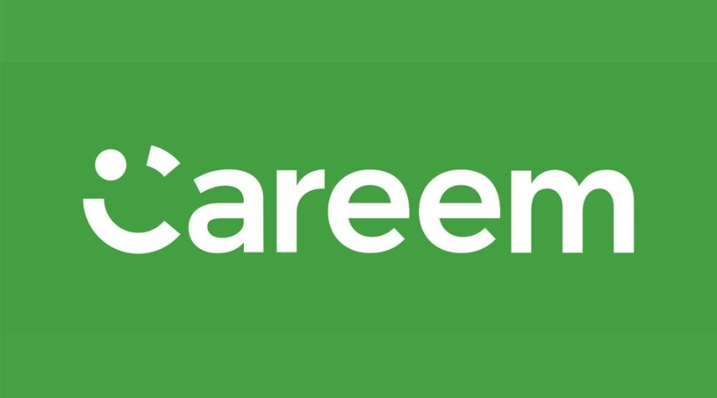
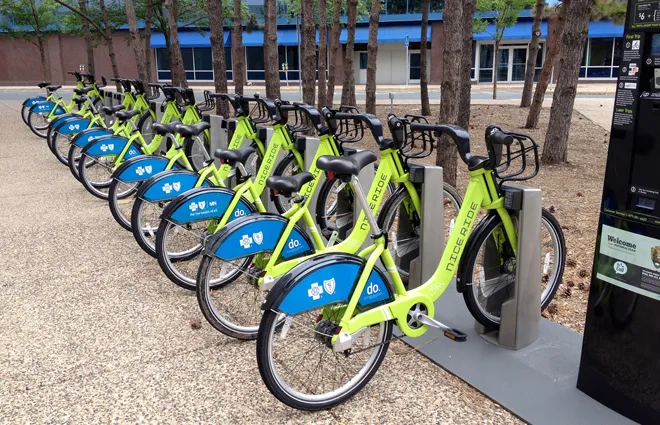
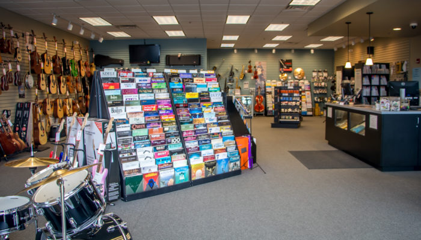

In this project, I used Machine Learning to predict whether a person's diabetec or not, based on patient's health charecteristics.
Then, I evaluated each model used to choose the best model to build the predictions upon.


This project examined real-world challenges faced by B2B marketplace to achieve better understanding of the KPIs required and how to achieve better performance.

This project studies Careem App data in order to explore the performance metrics using SQL.
The questions asked during this analysis were regarding the influence of physical properties of each player over his skills alongside with the age.
This project used database from Kaggle well suited for data analysis containing data for matches, players, and teams from 2008 to 2016.

In this project, I used Python to explore data related to bike share systems in the US. Using a code to import the data and answer questions about it by computing descriptive statistics. Also with writing a script that takes in raw input to create an interactive experience in the terminal to present these statistics.
This case study aims to study the profitability of marketing campaigns, choose the most optimum marketing channel and allocate the budget accordingly.

In this project, I explored the data of a digital music store to help the stakeholders achieve better understanding of the products.
In this project, I employed several supervised algorithms to accurately model individuals' income using data collected from the 1994 U.S. Census.
Then I choose the best candidate algorithm from preliminary results and further optimize this algorithm to best model the data.
The goal with this implementation is to construct a model that accurately predicts whether an individual makes more than $50,000.
E-payments became more and more popular among users after the pandemic in 2020, which led to more investments in this sector.
E-wallets represent a huge field in this sector. Orange Cash, as a leading player in such field, is the main focus of this project.